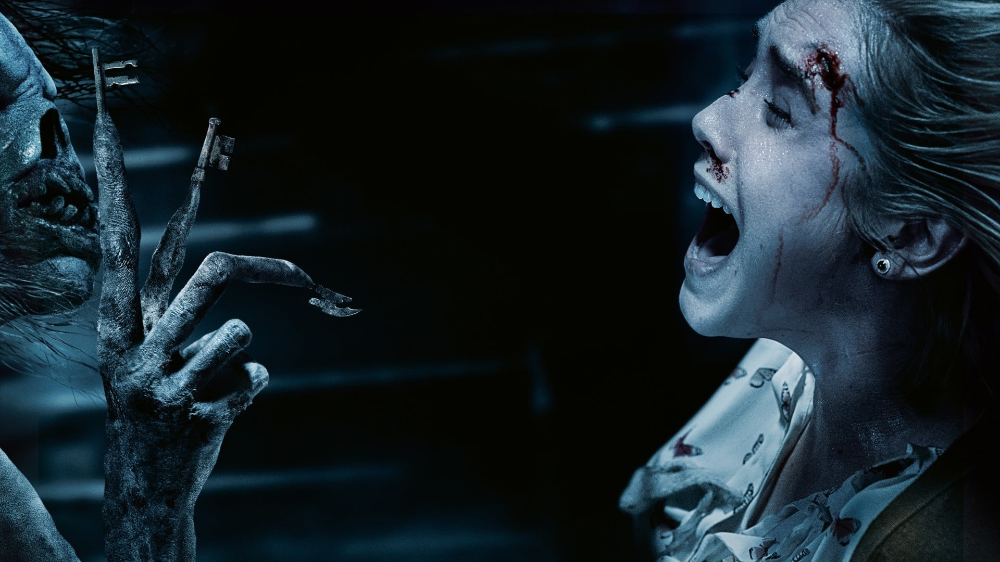

Insidiuos 3: La ultima Llave84% de coincidencia 2 h 00 minUna prestigiosa parapsicóloga y su equipo se desplazan a Nuevo México para investigar los fenómenos que ocurren en la casa en la que ella creció. Allá, ella deberá enfrentarse a su mayor miedo: el demonio que sin querer liberó en el pasado.REPRODUCIRTRAILERProtagonistas: Lyn Shaye, Leig Whanel, Spencer Locke. Genero: Terror.
 TRAILER
TRAILER